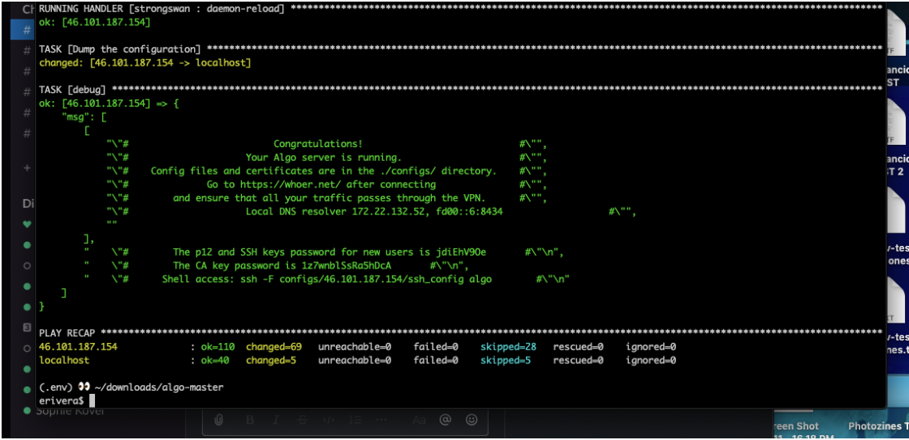
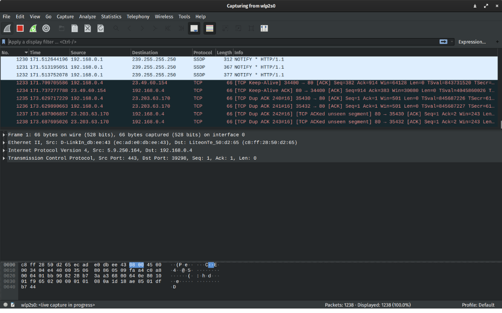

For many of us at Code Societies, VPNs, or Virtual Private Networks, were things we knew were important but didn’t know just how important until our guide for the day, Harlo Holmes, broke it down for us. In this class we learned who may have access to our online network and thus can see our traffic, and maybe even change it. We furthered our understanding of how encryption works, and the intricacies of why location privacy also matter. We first began by learning the technical, legal and political challenges this presents and then moved onto creating our own VPN, capturing our data to then analyze it using Wireshark, an open source tool.
When we access the internet these are the potential eyes, or endpoints, watching:
This is happening all the time and at any given time. So how do we ensure privacy on the internet? How do we de-anonymize those who have access to our data? Creating a VPN supports our ability to not only ensure a network of trust exists for ourselves and those we love but also literally protect our physical bodies. When accessing unencrypted sites, it is possible for our IP addresses to reveal and reveal our physical location. This is why it is super important to access HTTPS websites, not HTTP (the s denotes a secure network).
How do proxies play into safe internet usage? In this circumstance, a proxy is simply just another machine (computer) that we give permission to access the internet on our behalf. It can either be a piece of software or a service we pay to somewhere in the world (this can be a company or a person we know). I can use a proxy to access the internet through applications such as Twitter, Firefox or Spotify. However, this is not a perfect solution as proxies haven’t always fully protected people historically. Because IP addresses are hard to memorize, there does exist an internet phone book of sorts that tracks IP addresses. This is the Domain Name System (or DNS). IP addresses also change any given day but the DNS system tracks that location for you. Another issue that may occur are what are known as “side channel attacks” that essential gather information by looking up the DNS, instead of the proxy. This is why it’s absolutely important to ensure that you are doing things potentially risky, you’ll have to do a lot of work to ensure you and your information will be safe. A lot of responsibility needs to take place as either a proxy user or operator! I particularly found this piece of information to be super intriguing because it’s so easy to via the internet as just a place where someone goes to consume information. However, there are so many instances where someone or a company literally is waiting to consume you, especially if you are not careful. Trusting the internet feels arbitrary because it is a thing one cannot touch, yet can easily be misused.
Fun fact: Facebook started out unencrypted! They now use HTTPS. While Facebook as a company can see everything you are saying and doing, Wi-Fi operators and your ISPs cannot. The information is between you, your friend or family and Facebook.
VPNs on the other hand, is a piece of software that you use when accessing the internet. It connects you to another computer via an encrypted tunnel in another part of the world by using their IP address and not your IP address given by your ISP. While it may still record much of your online activity, it’s harder for someone to link this data to you because of the encryption. Harlo shared some questions we should ask ourselves when using a VPN:
Harlo’s recommendation is to ensure the VPN provider is super trustworthy because otherwise it acts as an ISP. She also suggested for us to consider non-logging VPNs such as Vypr, Mullvad and Tunnelbear, to name a few, as they do not keep logs of your activity. If you notice your VPN internet is working slow, we can assume someone is accessing your data (e.g. government throttling connections), and therefore it is no longer safe to use. ALGO and TOR are VPNs that provide higher levels of protection. (TOR is triple encrypted - your information goes through three computers, making it impossible to track to your actual computer. When you use a VPN your IP is different.)
With Harlo’s help, we saw what our IP addresses were and if they were different from our peers, and how there needs to be internet protocols, which are communication agreements between networks. This provided much clarity around ports and how they act as “little doors” between networks. If there are different ports appearing, we are able to see what kind of protocol, or communication, the computer is trying to make. OpenVPN is a favored VPN as it can run on any port, for example. So if you’re using OpenVPN to torrent movies, it’ll look like you’re just surfing the ‘net!
The trippiest part of this workshop came when we used Wireshark, a 20-year-old open source tool. I couldn’t believe how we could analyze our own traffic at any given moment. The way wireshark works is by providing a packet that lists all the information: where it came from, where it is going and what protocol it is using. You can sort your traffic by bytes to see what’s using the most amount of time and data.
 As someone who feels they use the internet fairly unrisky, I wondered what the purpose of VPN would be, and when I should consider using a VPN. Harlo encouraged us to think of ‘herd immunity’ in this case. Using a VPN protects my information and makes it harder to understand who I am so that I do not become susceptible to things like fraud. When traveling it is especially important to use a VPN so that something you accessed or shared doesn’t impede you from returning home or entering a country that may consider you a threat. Ultimately, the goal should always be to protect your information so that no one can a) see it and b) change it.